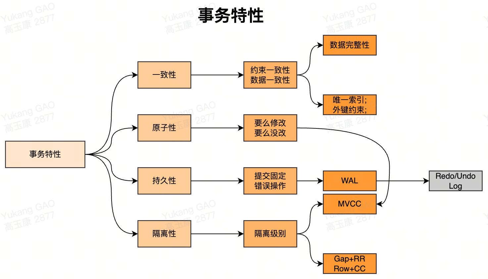
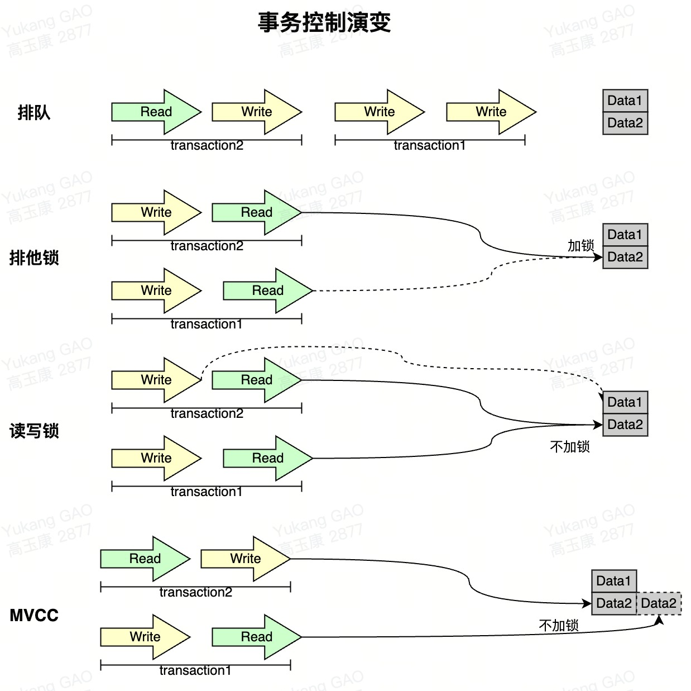
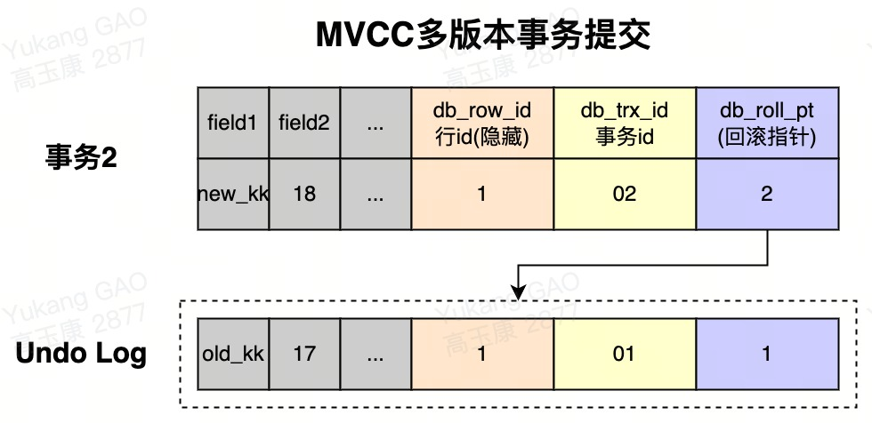
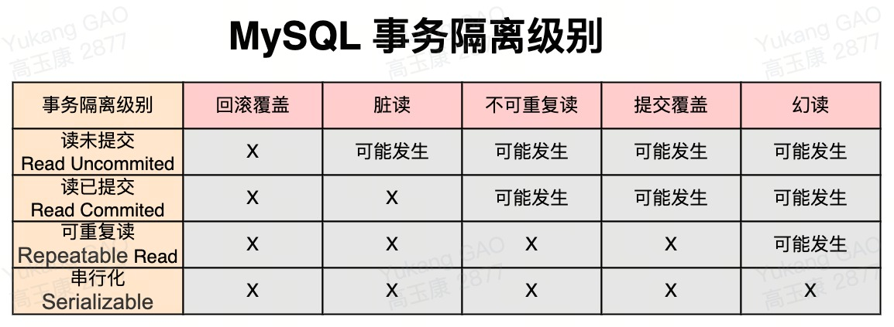
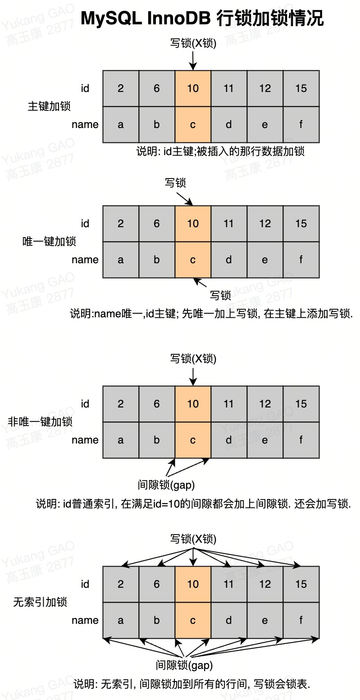
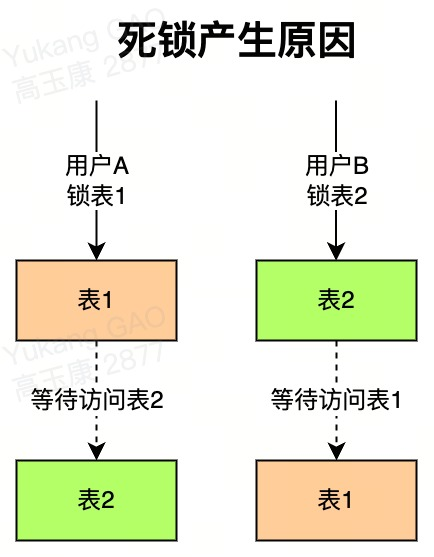

141特性: ACID：原子性(Atomicity);一致性(Consistency);隔离性(Isolation)和持久性(Durability). 2 -> 原子性: 事务是一个原子操作单元, 其对数据的修改, 要么全都执行, 要么全都不执行.3 --> 原子性原理: 修改=>Buffer Pool修改=>刷盘, 4 --> 情况1事务提交了, Buffer Pool脏页没有刷盘, 如何保证修改数据生效, Redo Log保证; 5 --> 情况2事务没有提交, Buffer Pool的脏页刷盘了, 如何保证数据可以正常被回滚, Undo Log保证;6 --> 每个写事务都会修改Buffer Pool, 会产生对应的Undo/Redo Log, 在Buffer Pool没被刷盘前, Undo/Redo Log会先写到日志文件, 如果在Dirty Page刷盘前数据库宕机, 重启数据库可以通过Redo Log恢复数据, 如果在Dirty Page刷盘后数据库宕机, 重启数据库可以通过Undo Log恢复数据.7 -> 持久性: 指的是一个事务一旦提交, 它对数据库中数据的改变就应该是永久性的, 后续的操作或故障不应该对其有任何影响, 不会丢失.8 --> 持久性原理: 事务提交=>BinLog落地=>发送BinLog=>存储引擎提交=>flush_logs=>check_point=>事务提交标记.9 -> 隔离性: 一个事务的执行不能被其他事务干扰, 一个事务内部的操作及使用的数据对其他的并发事务是隔离的.10 --> 隔离级别: MySQL支持4中事务隔离级别, 读未提交=>读提交=>可重复读=>可串行化.11 -> 一致性: 事务开始前和事务结束后吗, 数据库的完整性限制未被破坏. 一致性包括两方面约束一致性和数据一致性.12 --> 约束一致性: 创建表结构时所指定的外键;Check;唯一索引等约束, MySQL中不支持Check.13 --> 数据一致性: 是一个综合性的规定, 因为它是由原子性、持久性、隔离性共同保证的结果.14 
141并发事务导致的问题:2 -> 更新丢失: 当两个或多个事务同时修改同一行记录, 会产生更新丢失现象. 可以分为回滚覆盖和提交覆盖.3 --> 回滚覆盖: 一个事务回滚操作, 把其他事务已提交的数据给覆盖了.4 --> 提交覆盖: 一个事务提交操作，把其他事务已提交的数据给覆盖了.5 -> 脏读: 一个事务读取到了另一个事务修改但未提交的数据.6 -> 不可重复读: 一个事务中多次读取同一行记录不一致, 针对update.7 -> 幻读: 一个事务中多次按相同条件查询, 结果不一致, 针对insert. 8
9事务锁演进:10 -> 排队: 完全顺序执行事务操作, 不需要加锁, 强一致性, 处理性能低(序列化执行).11 -> 排他锁: 在事务之间涉及到相同的数据时, 使用排他锁, 先进入的事务独占数据项, 其他事务被阻塞, 等待前面的事务释放锁.12 -> 读写锁: 分为读读;写写;读写;写读, 进一步细化了锁的颗粒度, 区分读操作和写操作, 让读和读之间不加锁, 对读写;写写;写读添加排他锁.13 -> MVCC: 多版本控制, "Copy On Write思想", MVCC支持了读读;读写;写读的并行. 写写无法保证一致性无法并行.14 
191介绍: MVCC(Multi Version Concurrency Control)多版本控制, 为了实现高并发的访问数据, 对数据进行多版本处理, 并通过事务的可见性来保证事务能看到自己应该看到的数据版本. 多版本控制很巧妙地将稀缺资源的独占互斥转换为并发, 大大提高了数据库的吞吐量及读写性能. 2
3多版本产生方式: 每次事务修改操作之前, 都会在"Undo Log"中记录修改之前的数据状态和事务号, 该备份记录可以用于其他事务的读取, 也可以进行必要时的数据回滚.4
5优点: 读不加锁;读写不冲突.6
7缺点: MVCC只在Read Commited和Repeatable Read两种隔离级别下工作.8
9MVCC控制下读操作类型:10 -> 快照读: Snapshot Read, 读取的是记录的快照版本(有可能是历史版本), 不用加锁, 针对selct操作.11 -> 当前读: Current Read, 读取的是记录的最新版本, 都会加锁, 保证其他事务不会再并发修改这条记录. 针对select... for update;lock in share mode;insert;delete;update).12
13MVCC操事务提交步骤作步骤:14 -> 1.用排他锁锁定该行, 新记录存Redo Log.15 -> 2.把该行修改前的值复制到Undo Log.16 -> 3.修改当前行的值, 填写事务编号, 使回滚指针指向Undo Log中修改前的行.17
18注意: MVCC已经实现了读读;读写;写读并发处理, 如果解决写写并发可以通过乐观锁;悲观锁的处理方式.19

201介绍: 在并发事务中, 产生数据库一致性和更新丢失;脏读;不可重复读;幻读等问题, MySQL采用不同的事务隔离级别来规解决.2
3问题分析: 4 -> 回滚覆盖: 一个事务回滚操作, 把其他事务已提交的数据给覆盖了.5 -> 提交覆盖: 一个事务提交操作，把其他事务已提交的数据给覆盖了.6 -> 脏读: 一个事务读取到了另一个事务修改但未提交的数据.7 -> 不可重复读: 一个事务中多次读取同一行记录不一致, 针对update.8 -> 幻读: 一个事务中多次按相同条件查询, 结果不一致, 针对insert.9
10结论: 数据库的事务隔离级别越高, 并发处理能力越差. 根据系统特点来选择一个合适的隔离级别, 比如对不可重复读和幻读并不敏感, 更多关心数据库并发处理能力, 此时可以使用Read Commited隔离级别.11
12修改隔离级别命令:13 -> MySQL默认的事务隔离级别是Repeatable Read.14 -> 查看: show variables like 'tx_isolation';或者select ;15 -> 设置: 16 --> set tx_isolation='READ-UNCOMMITTED';17 --> set tx_isolation='READ-COMMITTED';18 --> set tx_isolation='REPEATABLE-READ';19 --> set tx_isolation='SERIALIZABLE';20
131锁分类:2 -> 操作的颗粒度划分:3 --> 表级锁: 每次操作锁住整张表, 锁定粒度大, 发生锁冲突的概率最高, 并发度最低. 应用在MyISAM;InnoDB;BDB 等存储引擎中.4 --> 行锁: 每次操作锁住一行数据, 锁定粒度最小, 发生锁冲突的概率最低, 并发度最高. 应用在InnoDB存储引擎中.5 --> 页级锁: 每次锁定相邻的一组记录, 锁定粒度界于表锁和行锁之间, 开销和加锁时间界于表锁和行锁之间, 并发度一般. 应用在BDB存储引擎中.6 -> 操作的类型划分:7 --> 读锁: Share Lock共享锁(S锁), 针对同一份数据, 多个读操作可以同时进行而不会互相影响.8 --> 写锁: Exclusivel Lock排他锁(X锁), 当前写操作没有完成前, 它会阻断其他写锁和读锁.9 --> IS锁;IX锁: 意向读锁;意向写锁, 属于表级锁, S和X主要针对行级锁. 在对表记录添加S或X锁之前, 会先对表添加IS或IX锁.10 -> 操作的性能划分:11 --> 乐观锁: 一般的实现方式是对记录数据版本进行比对, 在数据更新提交的时候才会进行冲突检测, 如果发现冲突了, 则提示错误信息.12 --> 悲观锁: 在对一条数据修改的时候, 为了避免同时被其他人修改, 在修改数据之前先锁定, 再修改的控制方式. 共享锁和排他锁是悲观锁的不同实现, 但都属于悲观锁范畴.13

151介绍: InnoDB引擎中, 可以使用行锁, 行锁分为共享锁和排他锁, 行锁是通过对索引数据页上的记录加锁实现的.2
3实现方式: Record Lock;Gap Lock和Next-key Lock.4 -> Record Lock: 记录锁, 锁定单个行记录的锁(记录锁, RC;RR隔离级别都支持).5 -> Gap Lock: "间隙锁", 锁定索引记录间隙, 确保索引记录的间隙不变(范围锁, RR隔离级别支持).6 -> Next-key Lock: 记录锁和间隙锁组合, 同时锁住数据, 并且锁住数据前后范围(记录锁+范围锁，RR隔离级别支持). 7 -> 注意: 在RR隔离级别, InnoDB对于记录加锁行为都是先采用Next-Key Lock, 当SQL操作含有唯一索引时, Innodb会对Next-Key Lock进行优化, 降级为RecordLock, 仅锁住索引本身而非范围.8
9常用SQL语句锁使用:10 -> 1. select...from语句, 不加锁, InnoDB采用MVCC机制实现非阻塞读, 针对读读;读写;写读不加锁。11 -> 2. select...from lock in share mode语句, 追加了共享锁, InnoDB会使用Next-Key Lock锁进行处理, 扫描到唯一索引, 可以降级为RecordLock锁.12 -> 3. select...from for update语句, 追加了排他锁, InnoDB会使用Next-Key Lock锁进行处理, 扫描到唯一索引, 可以降级为RecordLock锁.13 -> 4. update...where语句, InnoDB会使用Next-Key Lock锁进行处理, 扫描到唯一索引, 可以降级为RecordLock锁.14 -> 5. delete...where语句, InnoDB会使用Next-Key Lock锁进行处理, 扫描到唯一索引, 可以降级为RecordLock锁.15 -> 6. insert语句, InnoDB会在将要插入的那一行设置一个排他的RecordLock锁.281表级锁: 2 -> 介绍: 每次进行操作的时候锁住整张表, 并发读最低.3 -> 添加表锁: lock table tablename1 read|write, tablename2 read|write;4 -> 查看表锁: show open tables;5 -> 删除表锁: unlock tables;6 -> 表级读锁特点: 当前连接和其他的连接都可以读操作;但是当前连接增删改操作会报错,其他连接增删改会被阻塞.7 -> 表级写锁特点: 当前表追加write锁, 当前连接可以对表做增删改查操作, 其他连接对该表所有操作都被阻塞(包括查询).8 -> 结论: 表级读锁会阻塞写操作, 但是不会阻塞读操作. 而写锁则会把读和写操作都阻塞.9
10共享锁:11 -> 介绍: 又称为读锁(Share Lock S锁), 共享锁就是多个事务对于同一数据可以共享一把锁, 都能访问到数据, 但是只能读不能修改. 12 -> 添加共享锁: select...lock in share mode13 -> 结论: 事务使用共享锁只能读取, 不能修改, 修改操作被阻塞.14
15排他锁:16 -> 介绍: 又称为写锁(Exclusivel Lock X锁), 排他锁就是不能与其他锁并存, 如一个事务获取了一行数据的排他锁, 其他事务就不能对该行记录做其他操作, 也不能获取该行的锁.17 -> 添加排他锁: (SQL语句)...for update. InnoDB会默认在update/delete语句上加for update.18 -> 查询添加排他锁: select... for update. 19 --> 注意: 只能获取到非排他锁的数据;如果查询没有使用到索引, 将会锁住整个表记录.20 -> 结论: 当前事务使用了排他锁可以读取和修改, 其他事务不能修改, 也不能获取到锁.21
22乐观锁:23 -> 介绍: 不是数据库提供的功能, 需要开发者自己去实现. 在数据库操作时, 认为这次的操作不会导致冲突, 因此在数据库操作时不加锁, 而是在进行事务提交时再去判断是否有冲突.24 -> 对比: 悲观锁和乐观锁都可以解决事务写写并发;在应用中可以根据并发处理能力选择区分, 比如对并发率要求高的选择乐观锁;对于并发率要求低的可以选择悲观锁.25 -> 版本号实现乐观锁: 先给数据表增加一个版本(version)字段, 每操作一次, 将那条记录的版本号加1. version是用来查看被读的记录有无变化, 作用是防止记录在业务处理期间被其他事务修改.26 -> 时间戳实现乐观锁: 同样需要给在数据表增加一个timestamp时间戳字段. 在更新提交的时候检查当前数据库中数据的时间戳和自己更新前取到的时间戳进行对比, 如果一致则提交更新, 否则就是版本冲突, 取消操作.27 -> 注意: 可以通过框架来实现, 比如MyBatis框架OptimisticLocker插件来扩展.28

321表死锁:2 -> 产生原因: 户A访问表1(锁住了表1), 准备访问表2;用户B访问表2(锁住了表2), 然后准备访问表1;这时用户A由于用户B已经锁住表2, 它必须等待用户B释放表2才能继续访问, 同样用户B要等用户A释放表1才能继续, 这就死锁就产生了.3 -> 解决方法: 主要是由于程序的BUG产生的, 调整的程序的逻辑. 对于数据库的多表操作时, 尽量按照相同的顺序进行处理, 尽量避免同时锁定两个资源, 如操作A和B两张表时, 总是按先A后B的顺序处理, 必须同时锁定两个资源时, 要保证在任何时刻都应该按照相同的顺序来锁定资源.4
5行死锁:6 -> 产生原因1: 如果在事务中执行了一条没有索引条件的查询, 引发全表扫描, 把行级锁上升为全表记录锁定(相当于表锁), 多个事务之后, 就很容易产生死锁和阻塞, 最终应用系统会越来越慢, 发生阻塞或死锁.7 -> 解决方法: SQL语句中不要使用太复杂的关联多表的查询;使用explain"执行计划"对SQL语句进行分析, 对于有全表扫描和全表锁定的SQL语句, 建立相应的索引进行优化.8 -> 产生原因2: 两个事务分别想拿到对方持有的锁, 互相等待, 于是产生死锁.9 -> 解决方法: 在同一个事务中, 尽可能做到一次锁定所需要的所有资源; 按照id对资源排序, 然后按顺序进行处理.10
11共享锁转排他锁死锁:12 -> 产生原因: 事务A查询一条纪录, 然后更新该条纪录; 此时事务B也更新该条纪录, 由于事务A的共享锁, 事务B的排他锁请求只能排队等待. 当事务A执行更新操作时准备获取排他锁时, 会发生死锁, 因为事务B的排他锁请求已经占用, 无法授予该锁请求, 并且正在等待事务A释放其共享锁.13 -> 实现步骤14 --> 1. 事务A: select * from dept where deptno=1 lock in share mode; //共享锁15 --> 2. 事务B: update dept set dname='Java' where deptno=1; //由于1有共享锁，没法获取排他锁16 --> 3. 事务A: update dept set dname='java' where deptno=1; //排他锁 事务A此时也不能执行17 -> 解决方法:18 --> 1. 对于按钮等控件, 点击立刻失效, 不让用户重复点击, 避免引发同时对同一条记录多次操作.19 --> 2. 使用乐观锁进行控制. 乐观锁机制避免了长事务中的数据库加锁开销, 大大提升了大并发量下的系统性能. 20 --> 注意: 乐观锁机制是在系统中实现, 来自外部系统的用户更新操作不受我们系统的控制, 因此可能会造成脏数据被更新到数据库中.21
22死锁排查步骤:23 -> 1. 查看日志: show engine innodb status\G;24 -> 2. 使用explain查看下SQL执行计划.25 -> 3. 查看锁状态: 通过show status like'innodb_row_lock%'命令检查状态变量, 分析系统中的行锁的争夺情况.26 --> Innodb_row_lock_current_waits: 当前正在等待锁的数量.27 --> Innodb_row_lock_time: 从系统启动到现在锁定总时间长度.28 --> Innodb_row_lock_time_avg: 每次等待锁的平均时间.29 --> Innodb_row_lock_time_max: 从系统启动到现在等待最长的一次锁的时间.30 --> Innodb_row_lock_waits: 系统启动后到现在总共等待的次数.31 --> 如果等待次数高, 而且每次等待时间长, 需要分析系统中为什么会有如此多的等待, 然后着手定制优化.32